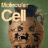

News Archives: Nov 1, 2003 - Jan 6, 2017
47 stories listed.
|
Feedback Circuits in Olfaction [Murthy Lab]
- Dec. 19, 2012
Tags: 2012, Neuron, Venkatesh Murthy, publication |
|
 |
New Course: MCB 162 [Prof. Matthew Meselson and Prof. James Mallet]
- Dec. 13, 2012
Tags: 2012, MCB 162, Matthew Meselson, course |
 |
New Course: MCB 144 [Prof. Nancy Kleckner and Prof. David Haig]
- Dec. 12, 2012
Tags: 2012, David A. Haig, MCB 144, Nancy Kleckner |
|
Novel Histone Variant Shaping Olfactory Neurons Published in eLife at Its Official Launch [Dulac Lab]
- Dec. 11, 2012
Tags: 2012, Catherine Dulac, eLife |
|
|
Erin O'Shea: HHMI Vice-President for Science and Chief Scientific Officer
- Dec. 5, 2012
Tags: 2012, Erin O'Shea, Howard Hughes Medical Institute (HHMI), Professor |
|
|
EdX: Transforming the Future of Education!
- Nov. 29, 2012
Tags: Life Sciences, Robert Lue, edX, undergraduate education |
|
|
David Cox Seeks Order in the Chaos of Fleeting Images
- Nov. 18, 2012
If you wanted to learn how a car works, you ... Tags: 2012, Assistant Professor, David Cox, MCB faculty, Molecular and Cellular Biology, profile |
|
 |
Joshua Sanes Presents Harvey Lecture November 15 In New York City
- Nov. 12, 2012
Tags: 2012, Harvey Lecture, Joshua Sanes, lecture |
|
Sensing Sound with a Molecular Handshake [Gaudet Lab]
- Nov. 7, 2012
Tags: 2012, Nature, Rachelle Gaudet |
|
|
Meselson, Peralta Prizes Awarded to MCB Researchers
- Oct. 30, 2012
Tags: 2012, Ernest Peralta Fund Award, Meselson Prize, Peralta Prize |
|
|
A Lasker Goes To . . . Tom Maniatis, Former MCB Professor
- Oct. 24, 2012
Tags: 2012, Koshland, Lasker Award, Tom Maniatis |
|
|
Karine Gibbs Wins Coveted Packard Foundation Fellowship
- Oct. 19, 2012
Karine Gibbs has been awarded a prestigious Packard Foundation Fellowship ... Tags: 2012, Karine Gibbs, Packard Foundation Fellowship, award |
|
|
Hopi Hoekstra Receives New Estela Medrano Award for Excellence in Aging Research
- Oct. 17, 2012
Tags: 2012, Estela Medrano Award, Hopi Hoekstra, awards |
|
|
Shaping Music Preference in Mice [Hensch Lab]
- Oct. 8, 2012
Tags: 2012, PNAS, Takao Hensch |
|
|
Controlling the Mind of the Worm [Ramanathan Lab]
- Sept. 26, 2012
Tags: 2012, Askin Kocabas, HARVARDgazette, Hannah Shen, Nature, Sharad Ramanathan |
|
|
Richard Losick Receives Prestigious Horwitz Prize
- Sept. 24, 2012
Tags: 2012, Horwitz Prize, Richard Losick |
|
|
Dynein Puts Its Best Foot Forward [Leschziner Lab]
- Sept. 20, 2012
Tags: 2012, Andres Leschziner, Cell, Science, publication |
|
|
Ethan Garner Tracks the Hidden Dynamics of Life
- Aug. 31, 2012
Ethan Garner, a new assistant professor in the Molecular and ... Tags: 2012, Ethan Garner, MCB faculty, profile |
|
|
New Course: MCB 157 [Prof. Craig P. Hunter]
- Aug. 30, 2012
MCB 157: Developmental Genetics and Genomics is the reincarnation of ... Tags: 2012, Craig Hunter, MCB 157, class, course |
|
|
New Course: MCB 121 [Prof. Karine A. Gibbs]
- Aug. 30, 2012
Microbiologists, by nature, are both generalists and specialists-- we study ... Tags: 2012, Karine Gibbs, MCB 121, class, course |
|
|  |
RNAi on the Menu [Hunter Lab]
- Aug. 28, 2012
What if your lunch could tell your body to shut ... Tags: 2012, Craig Hunter, Molecular Cell |
|
Prof. Erin O'Shea's Zambo Keeps On Winning
- Aug. 22, 2012
Last year, we wrote about MCB Professor Erin O'Shea ... Tags: 2012, Dog, Erin O'Shea, Zambo |
|
|
No Blind Mice [Meister- and Sanes Labs]
- Aug. 16, 2012
What does the eye tell the brain? Two very different ... |
|
|
Two MCO Students Win HHMI International Fellowships
- Aug. 3, 2012
Two MCB graduate students, Guo-Liang "Chewie" Chew (rising G3, Schier ... Tags: 2012, Ghazal Ashrafi, Guo-Liang Chew, Howard Hughes Medical Institute (HHMI) |
|
|
It's Not You, It's Me [Sanes Lab]
- July 30, 2012
Neurons in the brain extend elaborately branched dendrites that receive ... Tags: 2012, Joshua Sanes, Nature, publication |
|
|
Good Noise, Bad Noise [Uchida Lab]
- July 18, 2012
Biological systems are inherently noisy: they contain randomness beyond an ... Tags: 2012, Naoshige Uchida, Neuron, publication |
|
 |
Predicting Bacteria's Response to Multidrug Treatment [Cluzel Lab]
- July 10, 2012
Severe microbial infections, such as tuberculosis and MRSA, often require ... Tags: 2012, Philippe Cluzel, Proceedings of the National Academy of Sciences, publication |
|
Volume Control at the Synapse [Murthy Lab]
- June 22, 2012
You can't miss it in the news these days ... Tags: 2012, Journal of Neuroscience, Venkatesh Murthy, publication |
|
 |
The Inputome of Dopamine Neurons Identified [Uchida Lab]
- June 7, 2012
A central goal in neuroscience is to understand how diverse ... Tags: 2012, Naoshige Uchida, Neuron, publication |
|
Study Suggests Neural Wiring Peaks at Birth and Then it's All Downhill from There [Lichtman Lab]
- June 7, 2012
The goal of this study was to investigate the pattern ... Tags: 2012, Jeff Lichtman, Neuron, publication |
|
|
Susan Foster, Our Harvard Hero
- June 6, 2012
Susan Foster, executive director of the MCB Department, received a ... Tags: 2012, Harvard Heroes, awards |
|
|
12 Undergraduates Receive Awards
- May 31, 2012
Twelve undergraduates concentrating in either Molecular and Cellular Biology (MCB ... Tags: 2012, Hoopes Prize, Lawrence J. Henderson Prize, awards, undergraduate education |
|
|
Cynthia Kenyon to Deliver 2012 Paul Doty Lecture
- May 29, 2012
Cynthia Kenyon, American Cancer Society Research Professor and director of ... Tags: 2012, Paul Doty Lecture |
|
|
Fish in the Matrix: Motor Learning in a Virtual World
- May 11, 2012
There are two fundamentally different forms of sensory information that ... Tags: 2012, Florian Engert, Nature, publication |
|
|
2012 Research Fellowships for 4 MCB Graduate Students
- April 24, 2012
The National Science Foundation has offered four MCB graduate students ... Tags: 2012, Hertz Foundation Graduate Fellowship, National Defense Science and Engineering Graduate Fellowship, National Science Foundation Graduate Research Fellowship, fellowship |
|
|
More Tricks in Bacterial Chemotaxis
- April 17, 2012
The bacteriumEscherichia colidecides whether life is getting better or worse ... Tags: 2012, Howard Berg, Nature, publication |
|
|
Svante Pääbo to Give 2012 Prather Lectures April 26, 27, 28, 2012
- April 15, 2012
The annual John M. Prather Lectures in Biology will be ... Tags: 2012, Prather Lectures, lecture |
|
|
Reaction-Diffusion Patterning in Development
- April 12, 2012
How do zebras get their stripes and leopards their spots ... Tags: 2012, Alexander Schier, Science, Sharad Ramanathan, publication |
|
|
EPB Symposium to be Held April 21, 2012
- April 10, 2012
On Saturday, April 21, the second Engineering and Physical Biology ... Tags: 2012, Engineering and Physical Biology Symposium, symposium |
|
|
Ron Vale to Deliver 2012 John T. Edsall Lecture
- April 9, 2012
Ron Vale,Howard Hughes Medical Institute Investigatorand Professor of Cellular ... Tags: 2012, John T. Edsall Lecture, lecture |
|
|
On April 14th, 2012: 9th Annual Microbial Sciences Initiative (MSI) Symposium Explores the Richest Biological Reservoir on Earth:The Microbial World
- March 29, 2012
Microbes (including bacteria, viruses, fungi, and protists) are ubiquitous on ... Tags: 2012, Microbial Sciences Symposium, symposium |
|
|
Spreading the Wealth in the Retina
- March 22, 2012
The retina is a lot more complicated than a simple ... Tags: 2012, Joshua Sanes, Nature, publication |
|
|
Itay Budin Receives Weintraub Award for Outstanding Graduate Research
- March 5, 2012
Molecular and Cellular Biology graduate student Itay Budin has received ... Tags: 2012, Hutchinson Cancer Research Center's Harold M. Weintraub Graduate Student Award, awards |
|
|
Taking Microscopy to the Limit -- and Beyond
- Feb. 15, 2012
Even with the most powerful optical microscopes, biologists who study ... Tags: 2012, Alexander Schier, Andrew McMahon , Catherine Dulac, Jeff Lichtman, Sam Kunes, Susan Mango |
|
|
Structure of the DNA Damage Sensor from Bacterial Nucleotide Excision Repair
- Feb. 6, 2012
DNA damage is a fact of life for all living ... Tags: 2012, David Jeruzalmi, Nature Structural & Molecular Biology, publication |
|
|
Dissecting Computation in the Dopamine Reward Circuit
- Jan. 18, 2012
In 1954, Olds and Milner discovered that direct, electrical stimulation ... Tags: 2012, Naoshige Uchida, Nature, publication |
|
|
Keeping the Faith: The Final Act of Stopping Careless Cells
- Jan. 3, 2012
Faithful chromosome segregation during cell division keeps cells alive and ... Tags: 2012, Andrew Murray, Current Biology, publication |